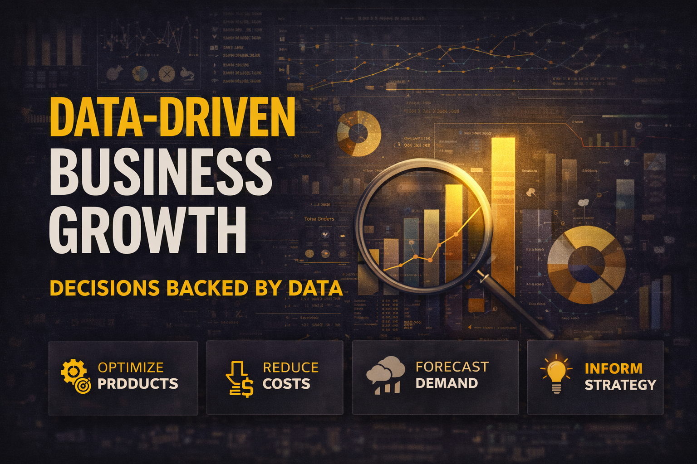

Analytics becomes valuable when insight leads to a decision—and that decision creates measurable action.
Every business generates signals: transactions, customer behavior, website activity, inventory movement, operational delays, feedback, and financial performance. The challenge is rarely the absence of data. The challenge is knowing what question to ask of it.
Good analysis helps organizations move beyond assumptions. It reveals patterns, tests ideas, identifies risks, and gives decision-makers evidence they can act on.
A dashboard tells you what is happening. Good analysis explains why it matters. Great analysis changes what you do next.— Editorial perspective
Having an Analytics Team Does Not Automatically Make a Company Data-Driven.
A company may already have dashboards, reporting systems, analysts, and large databases—but the real test is whether evidence consistently influences actual business decisions.
PwC Philippines has reported that analytics adoption does not automatically translate into mature, data-driven decision-making. Organizations may have analytics capabilities while still relying heavily on descriptive reporting rather than predictive or prescriptive decision support.
Find Opportunities Hidden in Existing Data
Businesses often search for growth by looking outward: new markets, new customers, or new products. But some of the most valuable opportunities may already be visible inside existing transaction and customer data.
Customer Segmentation
Identify groups with different needs, spending habits, profitability, and likelihood to return.
Product Opportunity
Discover which products drive revenue, repeat purchases, cross-selling opportunities, or weak margins.
Market Expansion
Use geographic and demographic patterns to identify underserved markets rather than relying only on assumptions.
Find the Cost of Friction
Operational inefficiencies are often hidden inside ordinary business processes: repeated manual work, slow approvals, unnecessary inventory, workflow bottlenecks, and delays.
Individually, these problems may appear small. Repeated across hundreds or thousands of transactions, they become expensive.
Small inefficiencies become expensive when they repeat at scale.
Analytics helps quantify where time, money, and resources are being lost so businesses can prioritize improvements based on measurable impact.
More Data Does Not Automatically Mean Better Decisions.
A company can have millions of records, dozens of dashboards, and sophisticated analytics tools and still make poor decisions. Data becomes useful only when it is reliable, relevant, understandable, and connected to a decision someone is actually prepared to make.
Move From Reactive to Proactive
Historical data can reveal patterns that help organizations prepare for what may happen next. Forecasting does not remove uncertainty, but it can make uncertainty easier to manage.
Forecasting is not about predicting the future perfectly. It is about reducing uncertainty enough to make a better decision before the future arrives.
From Reporting to Recommended Action
Analytics becomes more valuable as organizations move from simply describing past performance toward understanding causes, anticipating outcomes, and recommending actions.
What happened?
Reports, KPIs, dashboards and historical trends.
Why did it happen?
Root causes, comparisons and drill-down analysis.
What may happen?
Forecasting, probabilities and predictive models.
What should we do?
Recommendations, optimization and next-best actions.
Tools Do Not Create a Data-Driven Company. People Do.
A business can invest heavily in dashboards, cloud platforms, AI, and analytics tools—but still fail to become genuinely data-driven.
The real transformation happens when teams consistently use evidence to challenge assumptions, measure outcomes, and improve decisions.
Before Asking for a Dashboard, Ask These Questions.
What business decision are we trying to improve?
What would we do differently if the data confirmed our assumption?
Which metric actually represents business value—not just activity?
Is the underlying data reliable enough to support this decision?
How will we measure whether the decision actually worked?
The Goal Is Not More Data. The Goal Is Better Decisions.
Analytics creates value when it connects three things: a meaningful question, trustworthy evidence, and a decision that leads to action.
The organizations that benefit most from data will not necessarily be those with the largest datasets or the most dashboards. They will be the ones that can consistently turn information into understanding—and understanding into measurable action.